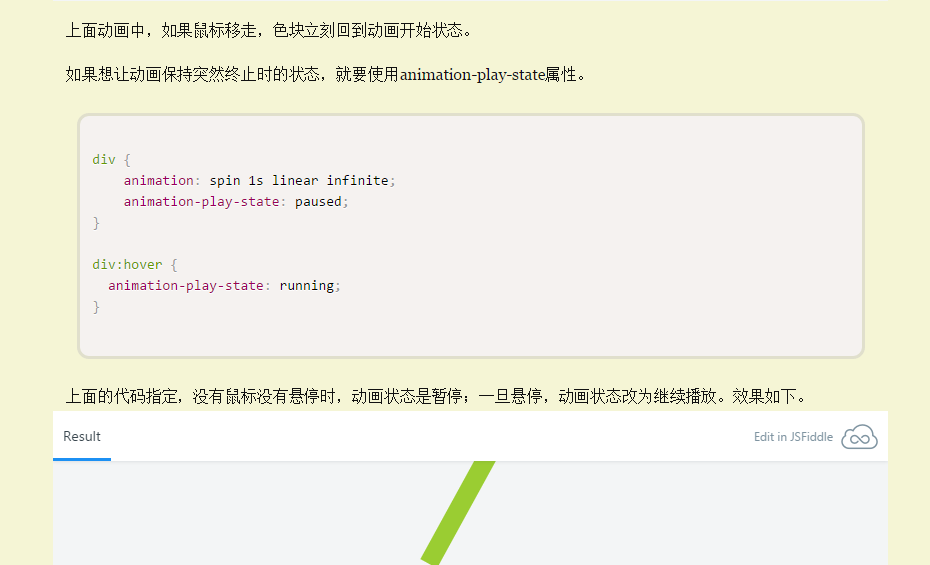

CSS3 animation的steps方式过渡
animation默认以ease方式过渡，它会在每个关键帧之间插入补间动画，所以动画效果是连贯性的。除了ease，linear、cubic-bezier之类的过渡函数都会为其插入补间。但有些效果不需要补间，只需要关键帧之间的跳跃，这时应该使用steps过渡方式。
比如GIF动图不支持程序对播放的控制，也不支持Alpha通道。但如果我们用一个PNG图片，把所有帧都放在一起，通过CSS3的animation控制background-position来播放就可以做到这些。
意思是，让animation以关键帧进行动画，而普通的动画默认有补间，如果我们只需要关键帧之间的跳跃，可以加上这个属性
animation
:
1s rainbow infinite steps(10)
;
- 上述这个案例就可以用到这个方案，有时间实现以下，如果用JQ的animate要类似这样 " -=48px "
不然会出现补间动画，你知道的这不是我们想要的。
有些时候我们使用动画，当鼠标移走的时候动画会立刻弹回初始位置，这不是我们想要的，我们想要当我们鼠标移走的时候，动画停留在结束位置，下次进来的时候，从停留位置继续运动，我们可以用在下列属性。
